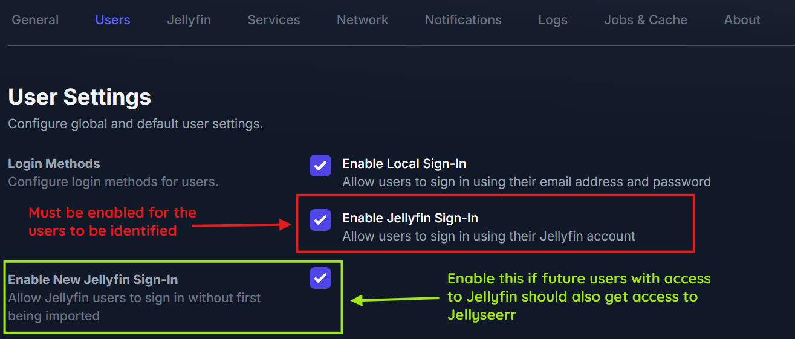
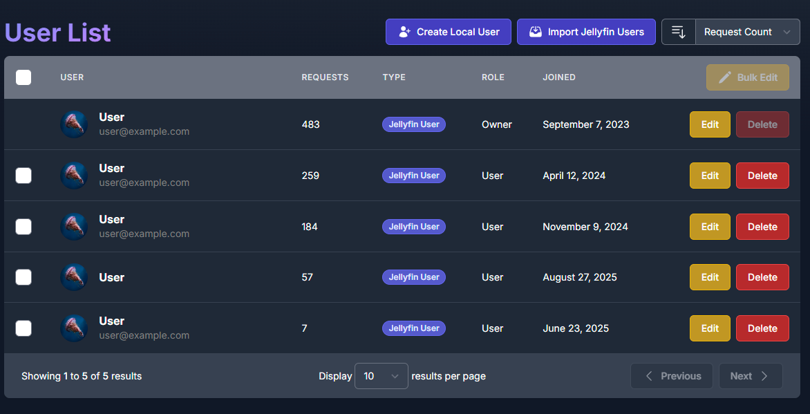
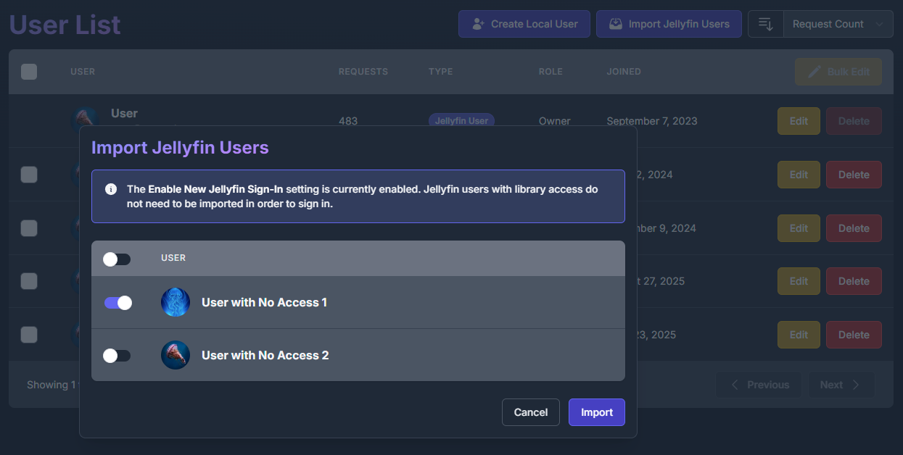

Seerr Settings
Prerequisites
Prerequisites:
- Seerr instance
- API key
- Jellyfin Sign-In enabled
Disclaimer
This plugin is NOT affiliated with Seerr. Seerr is an independent project.
Please report plugin issues to the Jellyfin Enhanced repository, not to the Seerr team.
Setup
Step 1: Enable Jellyfin Sign-In in Seerr
- In Seerr, go to Settings → Users
- Enable "Enable Jellyfin Sign-In"
- Save settings

Step 2: Import Jellyfin Users
This step is optional if you enable plugin-side auto import.
- In Seerr, go to Users page
- Click "Import Jellyfin Users"
- Select users to import
- Save changes
User Access:
-
Users WITH access:

-
Users WITHOUT access:

Step 3: Configure Plugin
- Go to Dashboard → Plugins → Jellyfin Enhanced
- Navigate to Seerr Settings tab
- Check "Show Seerr Results in Search"
- Enter your Seerr URL(s) (one per line)
- Use internal URL for best performance
- Can provide multiple URLs (first successful connection used)
-
Enter your Seerr API Key
- Found in Seerr: Settings → General → API Key 6. Click "Test Connection" to verify 7. Enable optional features (see below) 8. Click Save
Step 4: Configure User Import (Optional)
Enable automatic import in the plugin if you do not want to manually import users in Seerr.
When enabled, new Jellyfin users are automatically imported into Seerr the first time they use Seerr Search.
- Go to Dashboard → Plugins → Jellyfin Enhanced
- Navigate to Seerr Settings tab
- In User Import, check "Auto import Jellyfin users to Seerr"
- Optional: expand Blocked users and select users to exclude
- Optional: click Import Users Now to run immediate bulk import
- Click Save
Tip
The scheduled task Import Jellyfin Users to Seerr runs every 6 hours by default when auto import is enabled. You can change the trigger in Jellyfin Dashboard -> Scheduled Tasks.
Optional Features
Add Requested Media to Watchlist
Requirements
Requirements:
- The KefinTweaks plugin - Automatically add items to Jellyfin watchlist when they become available
Sync Seerr Watchlist to Jellyfin
- Sync your Seerr watchlist items to Jellyfin watchlist
- Items added when they become available in library
Sync Jellyfin Watchlist to Seerr
- Sync each user's Jellyfin watchlist to their linked Seerr watchlist
- Runs via the Sync Watchlist from Jellyfin to Seerr scheduled task (default: daily at 03:30)
- Requires users to have a linked Seerr account
Show 'Report Issue' Button
- Display issue reporting button on item detail pages
- Report video, audio, subtitle, or other problems
Enable 4K Requests
Requirements
Requirements:
- Seerr instance with 4K configuration
- Permissions for users to request 4K quality
Enable 4K TV Requests
Requirements
Requirements:
- Seerr instance with 4K Sonarr configured
- Permissions for users to request 4K Sonarr quality
When enabled:
- TV request buttons include a 4K dropdown action. - Choosing Request in 4K opens the season modal in 4K mode. - The season modal title shows Request Series - 4K. - The primary season modal button label becomes Request in 4K.
Show Advanced Request Options
- Display advanced options (server, quality profile, root folder) in the request modal
- Shown only to users with Advanced Requests or Manage Requests in Seerr, and to admins
- For other users the advanced fields are hidden and ignored if sent
Auto Import Jellyfin Users to Seerr
- Just-in-time import when a user first accesses Seerr search and is not linked yet
- Scheduled bulk import via Import Jellyfin Users to Seerr task
- Manual bulk import via Import Users Now button
- Blocklist support to exclude selected Jellyfin users from lookup/import
Requests Page Management
Enable Requests Page
Display a dedicated page showing active downloads from *arr and requests from Seerr.
Configuration:
- Go to Dashboard → Plugins → Jellyfin Enhanced
- Navigate to Seerr Settings tab (look for the section titled "Requests Page")
- Check "Enable Requests Page"
- Choose integration method:
- Use Plugin Pages - Adds sidebar link (requires Plugin Pages plugin; Jellyfin 12: user profile menu instead)
- Use Custom Tabs - Adds custom tab (requires Custom Tabs plugin)
- Click Save and restart Jellyfin if using Plugin Pages
Show Downloads Section
Control whether active downloads from Sonarr/Radarr appear on the Requests page.
- Enabled by default - Shows active downloads alongside requests and issues
- Requires *arr integration to be configured
- Can be toggled independently
Show Seerr Issues Section
Display Seerr issues on the Requests page.
- View all reported issues
- Filter by issue status
- Link to Seerr reporter modal
Auto-Refresh Settings
- Enable Auto-Refresh - Automatically refresh download and request status
- Poll Interval - How often to refresh (30-300 seconds, default: 30)
- Lower = more frequent updates (higher server load)
- Higher = less frequent updates (lower server load)